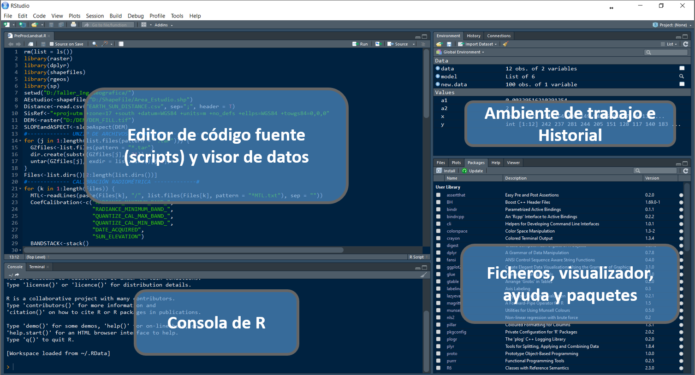

Code
print("Hello world")La interfaz gráfica de RStudio nos permite acceder a scripts, datos, encontrar ayuda y previsualizar gráficos y resultados.

R es capaz de manejar una variedad de tipos de datos, que se almacenan en diferentes estructuras como se puede observar en la siguiente tabla:
| Tipos de Datos | Información | Definición |
|---|---|---|
Numeric |
Datos contenidos en el conjuntos de los números reales | num <- 3.14 |
Integer |
Datos contenidos en el conjuntos de los números enteros | int <- 3L |
Character |
Datos que soportan cadenas de caracteres | chr <- "hello world" |
Complex |
Datos que soportan números complejos | comp <- 3+2i |
Logical |
Datos que sólo soportan valores lógicos de verdadero (T) o falso (F) | a <- 1; b <- 2; a < b |
Factor |
Este no es estrictamente un tipo de dato, pero vale la pena describirlo aquí. Una variable factor es una variable categórica. Los vectores de caracteres a menudo se almacenan como factores para explotar funciones para tratar datos categóricos. Por ejemplo, en análisis de regresión | Aplique as.factor() a un vector de caracteres o numéricos |
| Objetos | Tipos | ¿Soporta varios tipos de datos en el mismo objeto? |
|---|---|---|
Vector |
Numérico, carácter, complejo o lógico | No |
Factor |
Numérico o lógico | No |
Arreglo |
Numérico, carácter, complejo o lógico | No |
Matriz |
Numérico, carácter, complejo o lógico | No |
Data frame |
Numérico, carácter, complejo o lógico | Sí |
ts |
Numérico, carácter, complejo o lógico | Sí |
Lista |
Numérico, carácter, complejo, lógico, función, expresión, … | Sí |
Comenzamos a codificar imprimiendo Hello worldy posteriormente asignando valores a un objeto
print("Hello world")obj <- c(5, 2, 6, 58, 456, 56, 5)
c(5, 2, 6, 58, 456, 56, 5) -> obj| Función | Acción |
|---|---|
getwd() |
Muestra el wd: working directory |
setwd("midirectorio") |
Ajusta el wd al especificado |
ls() o dir() |
Lista lo que hay en el wd |
history() |
Muestra los últimos comandos ejecutados |
savehistory() |
Guarda el historial de comandos, por defecto en .Rhistory |
loadhistory() |
Carga el historial de comandos |
save.image("mywspace.R") |
Guarda los objetos del workspace, por defecto en .Rdata |
load("mywspace.R") |
Carga el workspace mywspace.R |
vector01 <- c(1, 2, 4, 7, 10, 11, 12, 19, 26)
vector02 <- c("a", "b", "d", "g", "j", "k", "l", "s", "z")
vector03 <- c("jorge", "roy", "daniel", "cesar", "patin", 254, 265)
vector04 <- c(FALSE, FALSE, FALSE, TRUE, TRUE, TRUE, TRUE)Algunas operaciones con vectores
# indexar vectores
vector01
vector01[4]
# evaluar la naturaleza del vector
a <- vector01[4]
is.vector(a)
is.numeric(a)
is.integer(a)
# operaciones con vectores
length(vector01)
(vector01 * 2) + 500
sum(vector01)
sqrt(vector01 - 1)
vector01 + (vector01 * 2)Una matriz es una estructura bidimensional. Las filas son horizontales y las columnas son verticales. Una matriz de 4 por 3 (4 x 3), por ejemplo, tiene 4 filas y 3 columnas. Las matrices se crean comúnmente usando tablas de datos numéricos como las de una hoja de cálculo de Excel o un archivo csv.
vector01[1] 1 2 4 7 10 11 12 19 26dim(vector01)NULLDado que la variable es un vector, no tiene un atributo dim (entonces es simplemente NULL).
¿Qué ocurre si le damos a vector01 un atributo dim?
dim(vector01) <- c(3, 3)
class(vector01)[1] "matrix" "array" El ejemplo que utilizamos hasta ahora tenía la intención de ilustrar la idea de que una matriz es simplemente un vector con un atributo de dimensión.
Un método más directo para crear la misma matriz utiliza la función matrix.
matrix01 <- matrix(vector01, nrow = 3, ncol = 3, byrow = T)arboles <- c("Tipuana tipu", "Myrsine andina", "Salix humboldtiana")
matrix02 <- cbind(arboles, matrix01) # column bind o juntar por columna.Esto se llama coerción implícita porque no lo hemos pedido. Solo sucedió. Sin embargo, todavía se desea trabajar con diferentes tipos de datos.
class(matrix02)[1] "matrix" "array" dim(matrix02)[1] 3 4rownames(matrix02)NULLcolnames(matrix02)[1] "arboles" "" "" "" Un data frame es una estructura de datos bidimensional similar a una matriz, pero funciona de manera muy diferente. Si bien un data frame parece una tabla simple, de hecho es una lista de vectores de la misma longitud. Las matrices y los data frames parecen similares, sin embargo, la principal diferencia es que un data frame permite tipos de datos mixtos (por ejemplo, numérico, lógico, caracter). Esto les permite almacenar diferentes tipos de variables, lo cual es muy útil en el análisis estadístico. Por ejemplo, en un análisis de regresión. Las matrices se usan principalmente para almacenar datos numéricos, y se pueden usar para álgebra matricial.
Matrices y Data Frames, ambos representan tipos de datos rectangulares, lo que significa que se usan para almacenar datos tabulares, con filas y columnas.
La principal diferencia, es que las matrices solo pueden contener una única clase de datos (al igual que los vectores), mientras que los dataframes pueden consistir de muchas clases diferentes de datos.
# se crea un data frame (df)
df01 <- data.frame(arboles, matrix01)
class(df01)[1] "data.frame"# podemos cambiar el nombre a las variables (columnas)
colnames(df01) <- c("nombre_cientifico", "circunferencia", "diametro_copa", "altura" )Varios conjuntos de datos tabulados o datasets se icluyen en la instalación de R (en el paquete datasets) y por defecto se ecuentran cargados para su uso. la funcion data() lista todos los datasets de R.
Trabajemos con el dataset iris (Edgar Anderson’s Iris Data)
str(iris)
# todas las observaciones de la columna 'Species'
iris[, "Species"]
# Se utiliza el caracter ‘$’ para acceder a los campos o columnas.
iris$SpeciesCuando queremos extraer datos del data frame según una condicion, esto se complica.
head(iris[iris$Species == "setosa", ])Así mismo, si se desea obtener las observaciones donde el ancho del sépalo sea menor o igual a 3 y la especie sea “setosa”.
head(iris[iris[, "Sepal.Width"] <= 3 & iris[, "Species"] == "setosa", ])La función subset nos facilita filtrar datos cuando queremos que se cumplan ciertas condiciones.
subset(iris, Sepal.Width <= 3 & Species == "setosa")¿Pero es la mejor opción? ¿Cómo ordeno? ¿Cómo cambio de un formato “ancho” a un formato “largo” (o viceversa)? etc.
La tendencia en la comunidad R para el tratamiento de datos, comprende el uso de tidyverse.
A diferencia de un vector, una lista es una colección de elementos que pueden ser de diferente tipo. Los componentes de una lista son típicamente pares clave-valor (key-value). El siguiente ejemplo muestra cómo se puede almacenar un punto (con coordenas) en una lista.
# Los elementos de la lista generalmente se acceden por nombre
coordenadas <- list(x = 10, y = 15)
coordenadas
point <- list(id = 123, coord = coordenadas, spatial.reference = "WGS_84")
point
point$id
# También podemos acceder a sus elementos de la siguiente manera
point[1]
class(point[1])
# Para obtener el valor del elemento de la lista, use corchetes dobles
point[[1]]
class(point[[1]])La lista, en el ejemplo, tiene tres elementos de diferentes tipos de datos. id es numérico, coord es otra lista y spatial.reference es una cadena de caracteres. La lista coord contiene dos elementos numéricos, x e y. Generalmente, se accede a los elementos de la lista usando su nombre, en lugar de número. En particular, muchas estructuras de datos tienen elementos con nombre a los que se puede acceder utilizando los operadores $ o @.
En la pestaña en Entorno (Environment) de RStudio podemos importar conjuntos de datos o datasets con el asistente de importación. No es recomendable cuando debemos importar varios archivos o si se van a leer archivos grandes. Para lo cual es más eficiente usar código.

Si conocemos la estructura de nuestros datos (por ejemplo, la primera fila es el título de las columnas o es un archivo separado por comas), Se pueden utilizar las funciones read.csv (librería base) o read_csv (librería readr, de tidyverse):
# datos será un 'data frame'
data01 <- read.csv(file = 'data/file.csv')
head(data01) Sepal.Length Sepal.Width Petal.Length Petal.Width Species
1 5.1 3.5 1.4 0.2 setosa
2 4.9 3.0 1.4 0.2 setosa
3 4.7 3.2 1.3 0.2 setosa
4 4.6 3.1 1.5 0.2 setosa
5 5.0 3.6 1.4 0.2 setosa
6 5.4 3.9 1.7 0.4 setosa# datos será un 'tibble'
data01 <- readr::read_csv(file = 'data/file.csv')Rows: 150 Columns: 5
── Column specification ────────────────────────────────────────────────────────
Delimiter: ","
chr (1): Species
dbl (4): Sepal.Length, Sepal.Width, Petal.Length, Petal.Width
ℹ Use `spec()` to retrieve the full column specification for this data.
ℹ Specify the column types or set `show_col_types = FALSE` to quiet this message.data01# A tibble: 150 × 5
Sepal.Length Sepal.Width Petal.Length Petal.Width Species
<dbl> <dbl> <dbl> <dbl> <chr>
1 5.1 3.5 1.4 0.2 setosa
2 4.9 3 1.4 0.2 setosa
3 4.7 3.2 1.3 0.2 setosa
4 4.6 3.1 1.5 0.2 setosa
5 5 3.6 1.4 0.2 setosa
6 5.4 3.9 1.7 0.4 setosa
7 4.6 3.4 1.4 0.3 setosa
8 5 3.4 1.5 0.2 setosa
9 4.4 2.9 1.4 0.2 setosa
10 4.9 3.1 1.5 0.1 setosa
# ℹ 140 more rowsEn otros casos, cuando ";" es utilizado como el separador de campo y "," para el punto decimal, se utiliza una variante de estas funciones.
# datos será un 'data frame'
data02 <- read.csv(file = 'data/file.csv', sep = ',', header = T)La escritura de datos se realiza de la siguiente manera:
readr::write_csv(x = data02, file = "data/csv_data.csv")Es posible leer datos en la forma .xls o .xlsx. Existen distintos paquetes que nos permiten hacerlo:
read_excel.read.xlsx# datos será un 'data frame'
data03 <- readxl::read_xls(path = "data/file.xls", sheet = 1)
data03 <- xlsx::read.xlsx(file = "data/file.xls", 1)La escritura de datos se realiza de la siguiente manera:
xlsx::write.xlsx(
data03, "data/xlsx_data.xlsx", sheetName = "Sheet1",
col.names = TRUE, row.names = TRUE, append = FALSE
)R proporciona dos formatos de archivo propios para almacenar datos, .RDS y .RData . Los archivos RDS pueden almacenar un solo objeto R y los archivos RData pueden almacenar varios objetos R.
Puede abrir un archivo RDS con readRDS:
data04 <- readRDS("data/file.RDS")La escritura de datos se realiza de la siguiente manera:
saveRDS(data04, file = "data/rds_data.RDS")La escritura de estos datos se realiza de la siguiente manera:
a <- 1
b <- 2
c <- 3
save(a, b, c, file = "data/stuff.RData")Puede abrir un archivo RData con load:
load("data/stuff.RData")